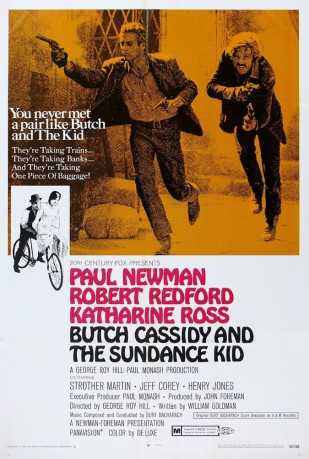
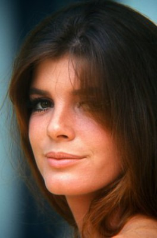

#1532 Butch Cassidy und Sundance Kid
Alternativ: Butch Cassidy and the Sundance Kid
Auszeichnungen: 4 Oscars gewonnen für 3 Oscars nominiert 1 GoldenGlobes gewonnen 1 BAFTA-Awards gewonnen
 
 IMDB-Wertung: 8.1 / 10
IMDB-Wertung: 8.1 / 10  IMDB-TOP-Platzierung: 221
IMDB-TOP-Platzierung: 221  Metascore: 66
Metascore: 66 
Um die Jahrhundertwende planen die beiden berühmt-berüchtigten Desperados Butch Cassidy (Paul Newman) und Sundance Kid (Robert Redford), den Zug der Union Pacific gleich zweimal zu überfallen: nämlich auf der Hin- und auf der Rückfahrt. Doch diese Dreistigkeit lässt sich die Regierung nicht gefallen: Von einer Elitetruppe werden die beiden bis zur Erschöpfung gejagt. - Bittersüße Westernballade mit Paul Newman und Robert Redford als sympathischem Gaunerduo und der genialen Musik von Burt Bacharach.
Jahr: 1969
Dauer: 110 Minuten
FSK: 16
Land: USA Studio: Twentieth Century-Fox Film CorporationTonspuren: DD5.1 - ,
Untertitel: Deutsch,
Auflösung: 1080p (1920x800) Größe: 9216 MB
Genre: Krimi, Western, Biographie
Regisseur: George Roy Hill
Drehbuch: William Goldman
Soundtrack: Burt Bacharach
Darsteller:
 Paul Newman als Butch Cassidy
Paul Newman als Butch Cassidy Robert Redford als The Sundance Kid
Robert Redford als The Sundance Kid-  Katharine Ross als Etta Place
 Strother Martin als Percy Garris
Strother Martin als Percy Garris Henry Jones als Bike Salesman
Henry Jones als Bike Salesman Jeff Corey als Sheriff Bledsoe
Jeff Corey als Sheriff Bledsoe George Furth als Woodcock
George Furth als Woodcock Cloris Leachman als Agnes
Cloris Leachman als Agnes- Ted Cassidy als Harvey Logan
 Kenneth Mars als Marshal
Kenneth Mars als Marshal Donnelly Rhodes als Macon
Donnelly Rhodes als Macon Don Keefer als Fireman
Don Keefer als Fireman Sam Elliott als Card Player #2
Sam Elliott als Card Player #2 Buck Holland als Posse Member , uncredited
Buck Holland als Posse Member , uncredited- Jody Gilbert als Large Woman
 Timothy Scott als News Carver
Timothy Scott als News Carver Charles Dierkop als Flat Nose Curry
Charles Dierkop als Flat Nose Curry- Pancho Córdova als Bank Manager
- Nelson Olmsted als Photographer
 Paul Bryar als Card Player #1
Paul Bryar als Card Player #1- Charles Akins als Bank Teller
- Eric Sinclair als Tiffany's Salesman
- Larry Barton als Citizen , uncredited
- Rico Cattani als Bank Guard , uncredited
- José Chávez als Bolivian Police Commander , uncredited
- Dave Dunlop als Gunman , uncredited
- Jill Hall als Minor Role , uncredited
 Percy Helton als Sweetface , uncredited
Percy Helton als Sweetface , uncredited- Jack Isbell als Posseman , uncredited
 Enrique Lucero als Guard in the 1st Bolivian Bank , uncredited
Enrique Lucero als Guard in the 1st Bolivian Bank , uncredited- Lyn Massey als Minor Role , uncredited
- Thurl Ravenscroft als (singing voice, uncredited
 Jorge Russek als Bolivian Army Officer , uncredited
Jorge Russek als Bolivian Army Officer , uncredited- José Torvay als Bolivian Bandit , uncredited
Datei: X:\HD-Western-1960-1979\Butch Cassidy und Sundance Kid (1969, FSK16, 1920x800).mkv seit 14.07.2015
Festplatte: HD Eastern+Western
 Es gibt insgesamt 110 Filme in der Gruppe 'HD-Western-1960-1979'
Es gibt insgesamt 110 Filme in der Gruppe 'HD-Western-1960-1979'